llm.cpp is a decoder-only GPT written in roughly 1,000 lines of dependency-free C++17. Custom tensors, multi-head causal self-attention, an analytical backward pass, AdamW, and a token-level BPE tokenizer — every gradient derived and written out by hand. No PyTorch. No Python runtime. No autograd hiding the math.
The zero-dependency CPU build compiles with a single g++ invocation on Linux, macOS, and Windows. CUDA and Apple Metal variants live alongside it for when you need VRAM instead of transparency.

x86-64 CPUg++ · OpenMPPoint it at a text file. It tokenizes, builds the model, prints the architecture and your host hardware, then starts stepping. RAM, loss, learning rate, and tokens-per-second on every line.
# Compile — no CMake required $ g++ -std=c++17 -O3 -march=native -fopenmp -I. -Iinclude -o llm.exe main.cpp # Train on a text file $ ./llm.exe data/input.txt # Generate from the best checkpoint, or chat interactively $ ./llm.exe data/input.txt --generate $ ./llm.exe data/input.txt --chat --chat-tokens 300
[DATA] Total tokens : 3521179
[DATA] Train tokens : 3169061
[DATA] Val tokens : 352118
+------------------------------------------+------------------------------------------+
| LLM Architecture |
+------------------------------------------+------------------------------------------+
| Max Context Length : 24 | Vocab Size (BPE) : 2056 |
| Number of Layers : 6 | Attention Heads : 6 |
| Embedding Channels : 128 | Total Parameters : 1712904 |
+------------------------------------------+------------------------------------------+
| Host CPU Device : AMD Ryzen 5 PRO 3500U w/ Radeon... |
| Host RAM (Total) : 6045 MB |
+-------------------------------------------------------------------------------------+
step 1/20000 (0.01%) | train loss 7.647731 | val loss 7.663259 | lr 3.00e-07 | 960.52 ms | 199 tok/s | ram 70.9 MB
step 2/20000 (0.01%) | train loss 7.637784 | val loss 7.663259 | lr 6.00e-07 | 1243.27 ms | 154 tok/s | ram 70.9 MB
step 3/20000 (0.01%) | train loss 7.658248 | val loss 7.663259 | lr 9.00e-07 | 994.39 ms | 193 tok/s | ram 70.9 MB
[SAVE] Weights written to best_model.bin
Decoder-only GPT with pre-layer-norm residual blocks. Embedding width, layers, heads, context length, learning rate schedule — all of it lives in config/config.h.
No autograd engine. SavedForward caches every intermediate from the forward pass — pre-softmax attention scores, dropout masks, ReLU inputs, layer norm statistics — and include/backward.h walks the graph in reverse with plain C++ loops that do exactly what the math says.
Gradients are accumulated, not overwritten, so mini-batch accumulation works. AdamWState tracks first and second moments per parameter and applies bias-corrected updates.
Debugging tip: swap -O3 for -g and step through backward.h one breakpoint at a time.
static const int BATCH_SIZE = 32; static const int BLOCK_SIZE = 64; static const int MAX_ITERS = 5000; static const int EVAL_INTERVAL = 500; static const float LEARNING_RATE = 5e-4f; static const int N_EMBD = 128; static const int N_HEAD = 2; static const int N_LAYER = 4; static const float DROPOUT = 0.05f; static const int BPE_VOCAB_SIZE = 2048;
Token-level BPE trained from scratch with a linked-list merge structure and hash-map pair lookup. TEXT mode for corpora in RAM; SHARDED mode memory-maps uint16_t token shards for billions of tokens.
Prefix-sum index over shards gives O(1) random access. OpenMP parallelizes sampling across the batch dimension with per-thread RNG seeds for determinism.
Best-validation checkpoint written to best_model.bin. Load it back for autoregressive generation or a terminal chat session with a prepended system prompt.
Resident set size printed every step — VmRSS on Linux, task_info on macOS, WorkingSetSize on Windows. Every byte is accounted for in the code.
Character-level and BPE models on TinyStories-class data. The point isn't leaderboard scores — it's watching the full pipeline converge on hardware you own.
| Params | Layers | Dim | Heads | Ctx | Vocab | Iters | Val Loss | Time | Hardware |
|---|---|---|---|---|---|---|---|---|---|
| 0.83M | 4 | 128 | 4 | 64 | 105 char | 3,000 | 1.6371 | 76m | CPU (AMD Ryzen) |
| 2.00M | 4 | 200 | 4 | 200 | 110 char | 5,000 | 0.9301 | 86m | CPU x64 |
| 19.17M | 4 | 200 | 4 | 200 | ~50K BPE | 5,000 | 2.3934 | 83m | GPU (bfloat16) |
CUDA path: ~19.6k tok/s in bfloat16. A CPU does 1–10 GFLOP/s of scalar matmul; an RTX 4090 does ~80 TFLOP/s.
If you've read Karpathy's llm.c and want the same concepts in C++ with the backward pass written out, this is it. The kind of thing you build once to prove you understand every operation from the matrix multiplications up to cross-entropy loss — then keep around because it trains small models on a laptop CPU without fighting a Python environment.
Models are tiny (sub-20M parameters). No distributed training, no gradient checkpointing, no model parallelism, no quantization. If you want to train something useful at scale, use llm.c, nanoGPT, or a real framework.